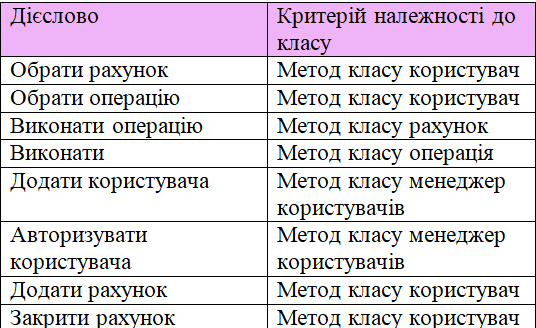

Опис об'єкта управління
Об'єктом управління є електронна система банкінгу (Е-банкінг).
Клієнт заходить у систему, і має змогу управляти власним рахунком. Відповідно є можливість переглянути стан рахунку, поповнити його або навпаки - зняти кошти. Також доступні інші стандартні банківські послуги. Серед них переказ коштів, отримання виписки.
Мета розробки проекту
- Розробити проект електронного банкінгу
- Зручний доступ до банківських рахунків та робота з ними
Бізнес-задачі
- Пошук банківського рахунку
- Перегляд стану рахунку
- Здійснення транзакцій
Бізнес-процеси
- Отримати список рахунків
- Вибрати рахунок
- Отримати інформацію про стан рахунку
- Обрати необхідну послугу
- Виконати відповідну операцію
Сценарії дії системи
Користувач
- Користувач виконує вхід до системи
- Користувач обирає рахунок
- Отримує інформацію про стан рахунку
- Обирає необхідну операцію
- Виконує обрану операцію
Таблиця обґрунтування класів
Таблиця обґрунтування методів
Діаграма об'єктів
Функціональні вимоги замовника - UML-діаграми прецедентів
Діаграма класів
Моделювання системи електронного банкінгу. Було створено 7 класів та побудовані зв'язки між ними:
- UserManager - User — агрегація, так як користувач може існувати без класу UserManager
- User - Account — композиція, так як акаунти живуть лише поки живе користувач
- Account - IOperation - агрегаія, так як операція може існувати без конкретного акаунту
- IOperation - CheckBalanceOperation - реалізація інтерфейсу
Загальний вигляд діаграми класів
Файлова структура проекту
Специфікації меодів
Папка з проектом
Завантажити папку з проектомЗапуск exe-файлу
Завантажити програму